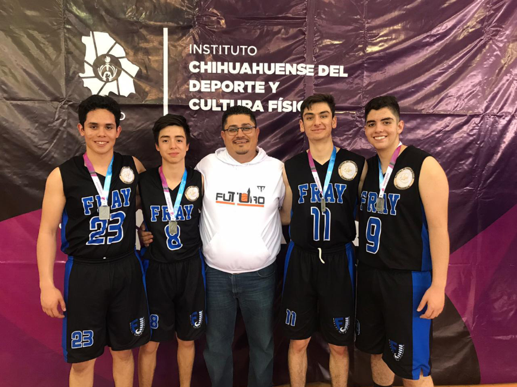
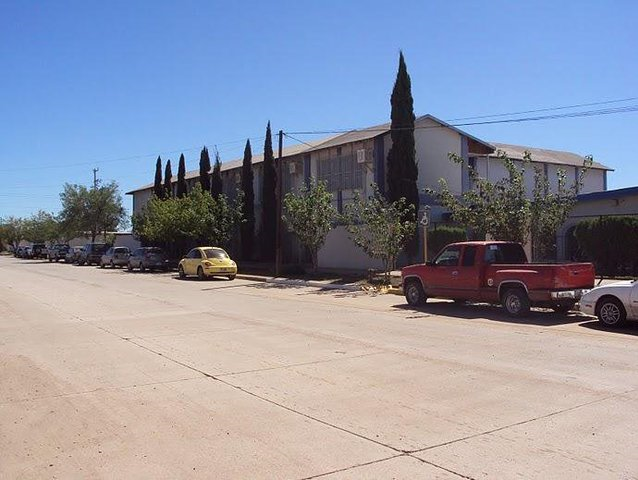

- 
- 

Misión
Formar a los estudiantes con un enfoque social, humanista, en competencias pertinentes para la vida y para la integración a un mundo globalizado, contribuyendo a la generación de conocimientos, la difusión de la cultura y la vinculación con la región en la cual estamos insertos.
Visión
La escuela preparatoria Fray Felipe de Jesus es reconocida por su calidad educativa, por su vinculación y reconocimiento social, por la alta aceptación de sus egresados en instituciones de educación superior, por su formación humanista e integral basada en valores, competencias y habilidades lo cual les permite vincularse y participar efectivamente en la solución de problemas de su entorno; por contar con profesores capacitados y certificados, apoyados por procesos académicos y admirativos certificados.
Valores
Colaboración
Fomentar el trabajo en equipo.
Honestidad
Hablar y actuar con la verdad, respetando las normas de la institución y la comunidad.
Responsabilidad
Asumir las consecuencias de nuestras acciones y decisiones.
Tolerancia
Aceptar la diversidad de pensamiento y acción de otros para convivir en armonía.
Perseverancia
Seguir adelante a pesar de los obstáculos y dificultades que se presenten día a día
Innovación
Desarrollar el pensamiento creativo para proponer ideas, conceptos y soluciones diferentes.
Historia
El 7 de Julio de 1977 se crea la Prelatura de Nuevo Casas Grandes, bajo la dirección pastoral del Sr. Obispo D. Hilario Chávez Joya.
Una de sus preocupaciones fue la del establecimiento de una escuela que tuviera una orientación católica para beneficio de los jóvenes de la región.
Para esto se invitó a varios padres de familia a formar un equipo para el establecimiento de la escuela. Se nombró como responsable al Dr. Salvador Bautista Vargas y otras personas que participaron fueron:
- Sr. Arturo Pliego Flores.
- Sr. Fernando Salgado Servin.
- Sr. Enrique Castillo Parra.
Faltaba invitar a una persona que hubiera realizado estudios de Normal Superior y titulado para encargarlo de la dirección, tal requisito lo cumplía el Lic. Rafael Casillas Martínez.
Inicia sus labores el 2 de Septiembre de 1985 con 43 alumnos en primer año de secundaria.
San Felipe de Jesus
San Felipe de Jesús fue el protomártir mexicano.
Fue un religioso de la orden de los franciscanos en Manila.
Al venir a ordenarse a México, naufragó su barco y llegó a Japón donde lo mataron.
Murió repitiendo el nombre de “Jesús”.